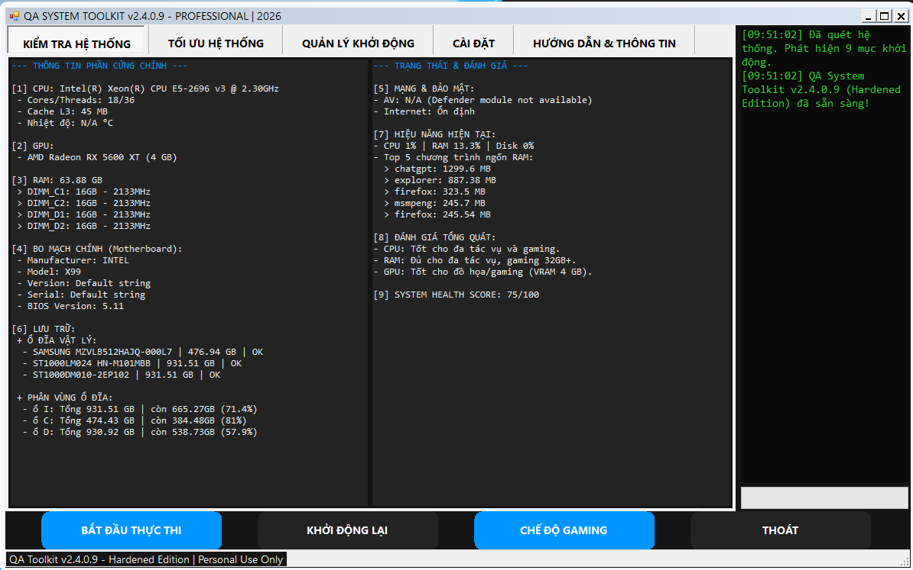
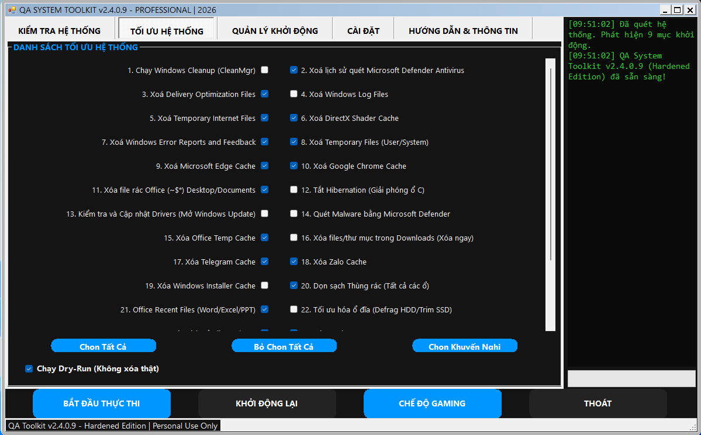
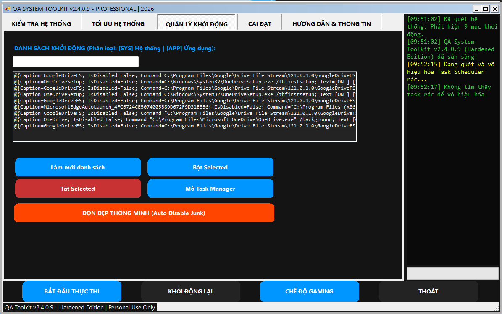
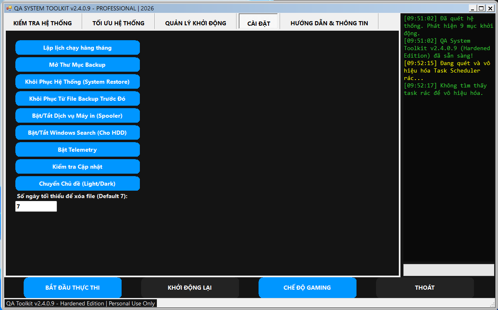
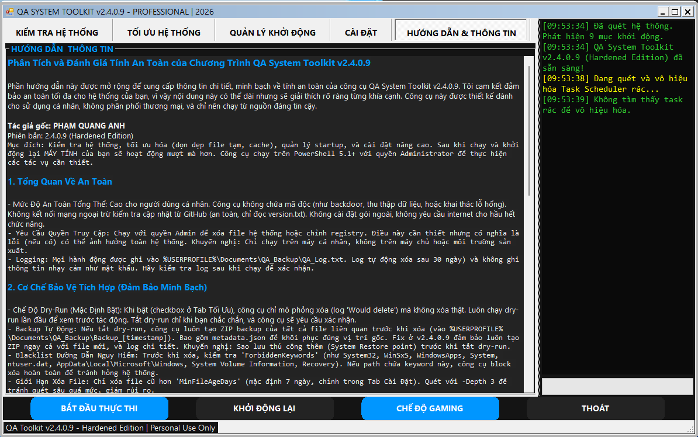
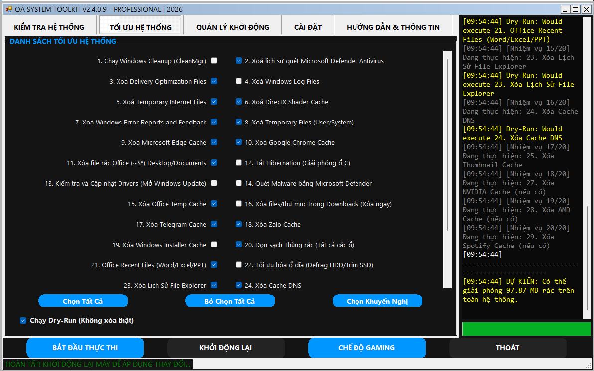

QA Toolkit
Features
Screenshots
Guide
GitHub
QA Toolkit
Windows System Optimization Tool written in PowerShell
⬇ Download Latest Version

🖥
System Audit
Analyze hardware and system status
🧹
Temp Cleanup
Remove unnecessary temporary files
🚀
Startup Manager
Control programs at Windows startup
📄
HTML Report
Generate detailed system reports
Screenshot Gallery





How to Use
Download the latest version from the Download button.
Run the program as Administrator.
Click
System Audit
to analyze your system.
Use
Temp Cleanup
to remove unnecessary files.
Generate a report with
HTML Report
.